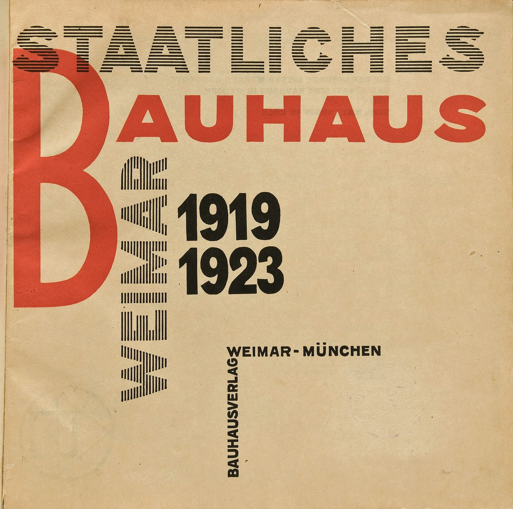

References / Book / 60
Staatliches Bauhaus in Weimar 1919–1923
The first survey of the school, published for the 1923 exhibition: Moholy-Nagy’s layout and Bayer’s cover put the Bauhaus idea into print.
- Source
- The Met: “Staatliches Bauhaus in Weimar 1919-1923” Book
- Creator
- László Moholy-Nagy (layout), Herbert Bayer (cover); edited by Walter Gropius
- Made
- 1923
- Style
- Bauhaus (agent-proposed, not yet reviewed by a person)
- Moods
- Constructive, bold, experimental
- Evidence
- Downloaded and inspected the title page scan and the front cover scan from Wikimedia Commons, both photographed by Tobias Adam from the Weimar university library copy. Only the title page is stored.
- Reviewed
- Rights
- Open license, stored. License: public domain. Rights policy


Context
The Met lists the book under Walter Gropius, 1923, “printed halftone and lithographic printing on paper,” 24.6 × 25.3 cm, accession 2001.392. The Met 492179.
MoMA credits the design to Herbert Bayer and László Moholy-Nagy. MoMA 7567. The Commons scans credit the title page to Moholy-Nagy and the front cover to Bayer. Title page, cover.
Bauhaus Kooperation describes the book as the catalogue that accompanied the first public exhibition of the school in 1923. Bauhaus Kooperation.
Observed
- Title page: a very tall red capital B fills the left side and serves as the first letter of the red word “AUHAUS”.
- “STAATLICHES” is set in black outline capitals filled with horizontal stripes; “WEIMAR” runs vertically in the same striped letters.
- “1919 1923” is set in heavy black sans-serif figures beside the vertical word.
- “BAUHAUSVERLAG” runs vertically and meets “WEIMAR-MÜNCHEN” at a right angle, like a bracket.
- Cover (not stored): condensed capitals in alternating red and blue blocks fill a black ground edge to edge.
Why it belongs
The title page treats letters as building parts: one huge initial, words turned 90 degrees, and type that locks into right angles. It is an early example of the “new typography” that Moholy-Nagy promoted.
The red-and-black palette with textured letter fills reads as Bauhaus without any circles or triangles.
Borrow
Use one oversized initial as a structural element and hang the rest of the title from it.
Rotate a secondary line 90 degrees to make an L-shaped bracket with a horizontal line.
Measured
Machine-extracted by tools/image-traits.py on . Full measurement.
- Mean chroma
- 0.29
- Palette
- #d4b88d 73%
- #cc4b33 9%
- #dbc49c 5%
- #221f15 3%
- #3d301e 2%
- #cba97a 1%
- #574530 1%
- #bfac89 1%

